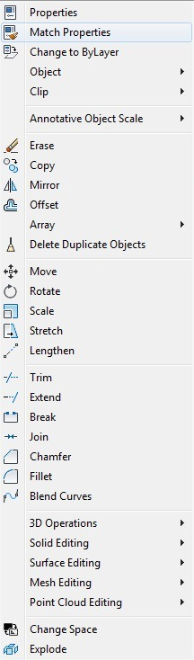
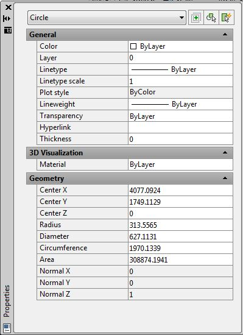
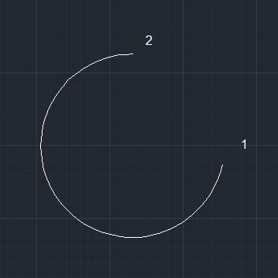
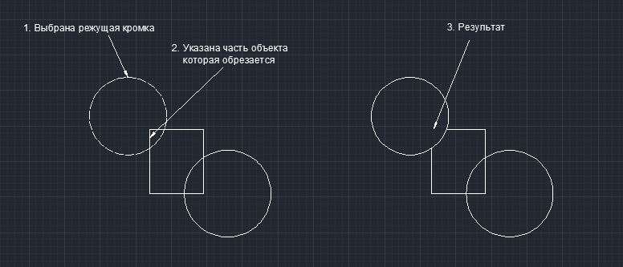
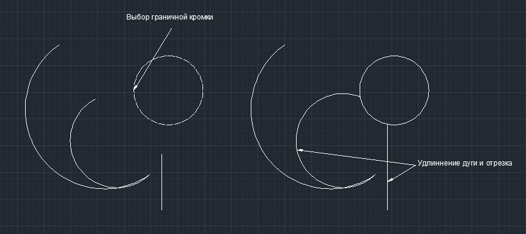

Лекция 6:Редактирование объектов в AutoCAD
В предыдущем уроке мы начали раздел изучения плоского моделирования и изучили методы создания 2D примитивов. Для того что бы создавать более сложные графические объекты необходимо уметь редактировать плоские объекты. Данный урок посвящен непосредственному изучению вопроса редактирования 2D примитивов.
Редактирование объектов предусматривает возможность удаления, копирования перемещения объектов, изменения их свойств таких, как цвет, вес линий, тип линий и ряда других свойств. Над объектами можно выполнять операции удлинения, обрезания, зеркального отражения, поворота на заданный угол и т.д.
Доступ к командам редактирования осуществляется через:
1. Пункт меню Modify.
2. Панели инструментов Modify.
3. Введение команды с клавиатуры.
Команды редактирования
Команда Свойства (Properties)
Способы ввода команды:
Набрать с клавиатуры команду: Properties.
Вызов меню: Modify ? Properties.
Дважды щелкнуть левой кнопкой мыши на объекте.
Из контекстного меню объекта выбрать команду Properties.
Данной командой можно изменить свойства одного объекта или общие свойства нескольких выбранных объектов. Команда открывает диалоговое окно Properties, в верхней строке которого содержится список избранных объектов и кнопки:
Окно разделено на две колонки. Первый столбик содержит название свойства, а второй — значение свойства, которое можно изменить.
Команда ERASE (Стереть)
Способы ввода команды:
Набрать с клавиатуры команду ERASE.
Вызов меню: Modify ? ERASE.
Кнопка на панели Modify. erase botton
Из контекстного меню объекта выбрать команду Erase.
Допускается выбор объектов до ввода команды или после ввода команды. В первом случае после ввода команды выбранные объекты удаляются. Во втором случае система предлагает выбрать объекты.
В командной строке выводится диалог:
Command: _erase
Select objects: 1 found
Select objects: 1 found, 2 total
Select objects: 1 found, 3 total
Select objects:
После выбора объектов нажмите клавишу Enter. Объекты будут удалены. Если необходимо удалить объект не полностью, а лишь определенную его часть, то используют команды TRIM (Обрезать) и BREAK (Разорвать).
Команда BREAK (Разорвать)
Способы ввода команды:
Набрать с клавиатуры команду BREAK.
Вызов меню: Modify ? Break.
Кнопка на панели Modify. break botton
Командой удаляется часть объекта между двумя указанными точками. Использование команды позволяет разорвать графический примитив, такой как линия, дуга на два объекта. При удалении части отрезка или дуги первой указывается точка на объекте, а второй — точка за пределами конца, который необходимо удалить. Для круга часть, которая удаляется, задается двумя точками в направлении против часовой стрелки.
После ввода команды система выдает запросы:
Command: _break - Команда разорвать.
Select object: - Выбрать объект или указать первую точку.
Specify second break point or [First point] - Указать вторую точку.
Выбор объектов осуществляется после ввода команды.
Команда TRIM (Обрезать)
Способы ввода команды:
Набрать с клавиатуры команду TRIM.
Вызов меню: Modify ? Trim.
Кнопка на панели Modify. trim botton
Команда обрезает выбранный объект режущей кромкой, которая пересекает его, и может быть дугой, линией, полилинией и т.д.. После ввода команды сначала указывается одна или последовательно выбирается, несколько режущих кромок. Процесс выбора завершается нажатием клавиши Enter. Далее система выдаст запрос на выбор объектов, которые обрезаются. Необходимо указывать ту часть объекта, которая обрезается. Для завершения выбора нажать клавишу Enter.
Работа с командой сопровождается запросам:
Command: Trim Команда Обрезать
Current settings: Projection = UCS,Edge = NoneSelect cutting edges … Выбрать режущую кромку
Select objects: 1 found Select objects: Первая режущая кромка определена. Выбор режущих кромок можно продолжить или нажать клавишу ENTER, чтобы прекратить выбор кромок.
Select object to trim or shift-select toextend or [Project / Edge / Undo]: Выбрать объект, который обрезается. Последовательно можно выбрать несколько объектов прекратить выбор объектов нажатием клавиши ENTER
Команда EXTEND (Удлинить)
Способы ввода команды:
Набрать с клавиатуры команду EXTEND.
Кнопка на панели Modify. extend botton
Командой удлиняются графические примитивы (линия, дуга, полилиния, луч, сплайн) до точек пересечения с другими объектами, которые будут предельными кромками. По своему действию она противоположна команде TRIM. после введения команды выдаются запросы на выбор предельных кромок. Прекратить выбор можно нажатием клавиши Enter. Далее система выдает запрос на выбор объектов, которые необходимо продлить. Завершение выбора осуществляется нажатием клавиши Enter. Указывая объекты, нужно показывать край, который ближе к предельной кромке, иначе команда не будет выполняться.
Подсказки системы будут иметь следующий вид:
Command: _extend Команда Удлинить.
Select objects: 1 found Показать предельную кромку
Select objects: Нажать ENTER
Select object to extend or shift-select to trim or[Project / Edge / Undo]: Выбрать объекты, которые удлиняются
Select object to extend or shift-select to trim or[Project / Edge / Undo]: Нажать ENTER
Команда MOVE (Перемещение)
Способы ввода команды:
Набрать с клавиатуры команду MOVE.
Вызов меню: MODIFY ? MOVE.
Кнопка на панели Modify. move botton
Для перемещения нужно на выбранном объекте указать базовую точку и задать координаты нового положения базовой точки после перемещения объекта. Координаты задаются любым из способов.
При использовании команды поддерживайте диалог:
Command: move Команда Переместить.
Select objects: 1 found Выберите объект
Select objects: Нажмите Enter.
Specify base point or displacement: Указать базовую точку
Specify second point of displacement or